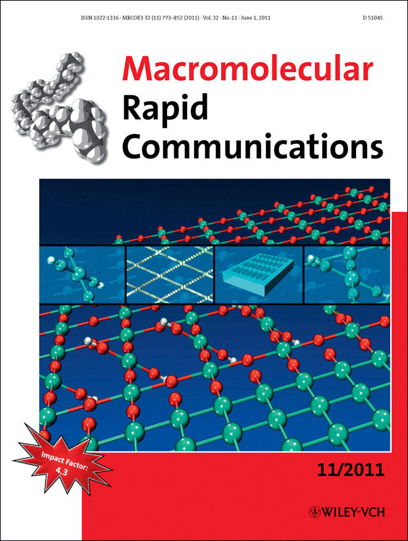


 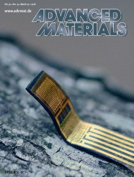
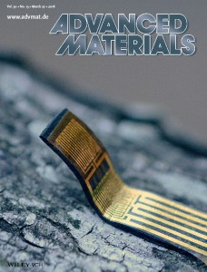

 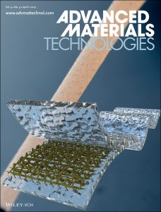
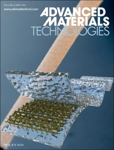

 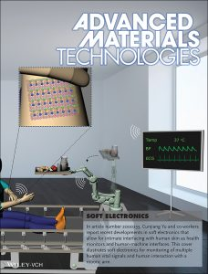
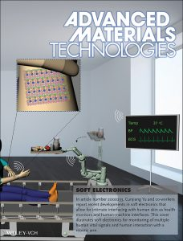
 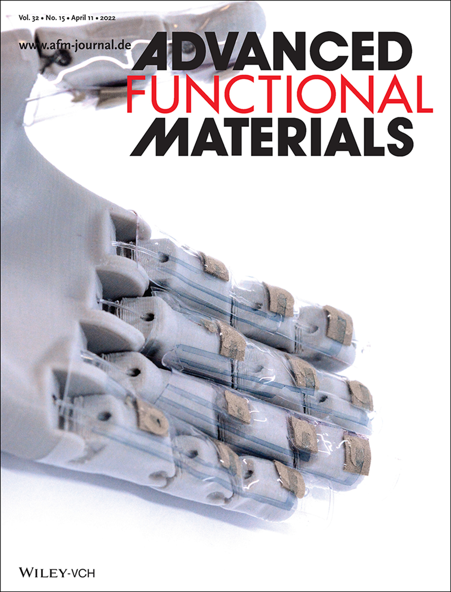
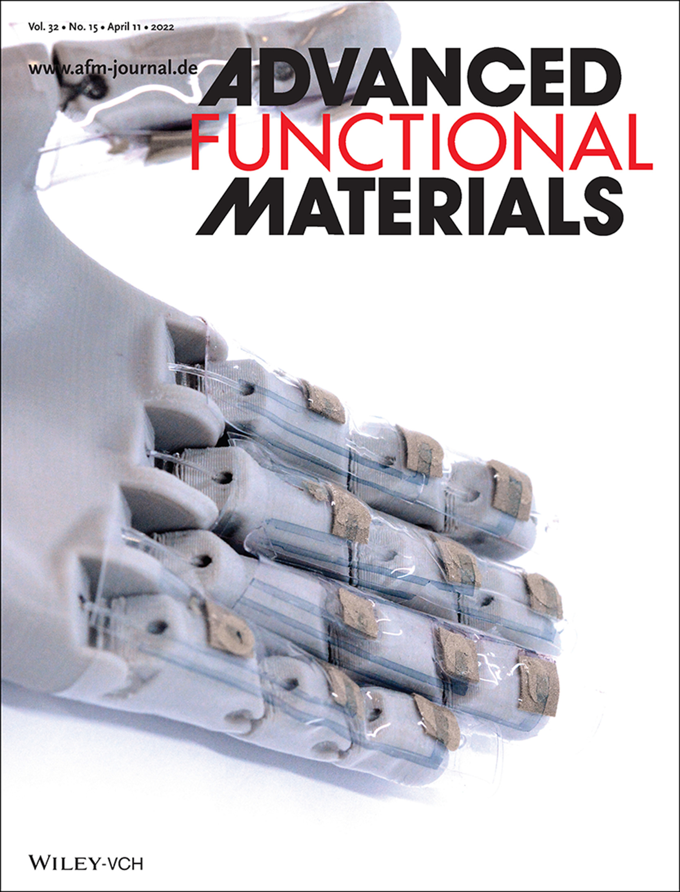

 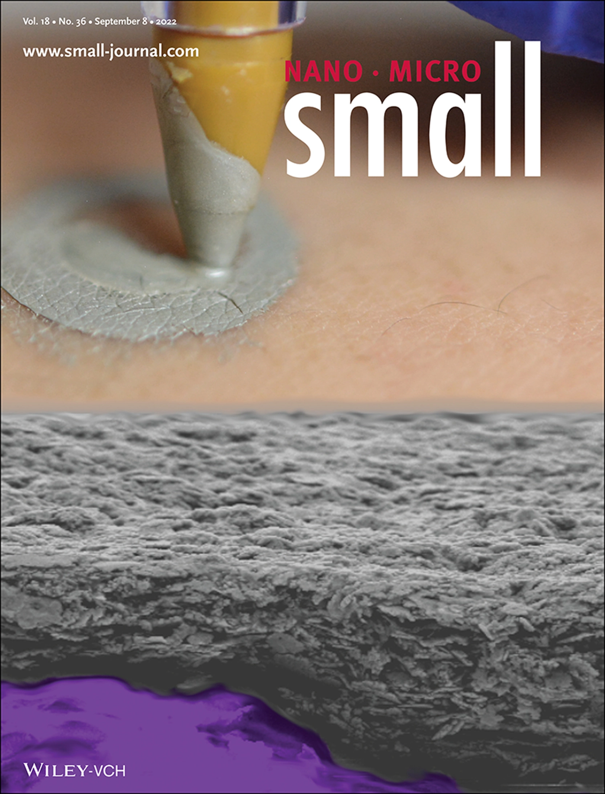
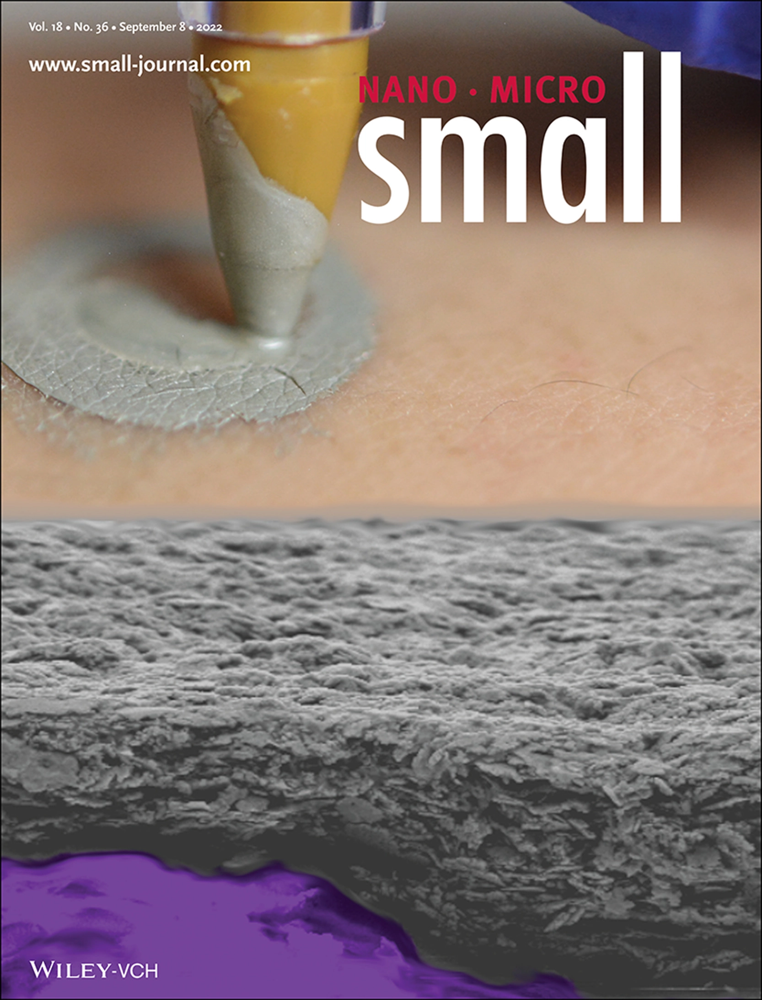
- Jiaming Zhang, Yanlong Wen, Yuanhe Wang, Letian Zhang, Shihao Liu, Wenfa Xie, Cunjiang Yu, Optoelectronics.
- Zhoulyu Rao, Faheem Ershad, Yingshi Guan, Fernanda C. Paccola Mesquita, Ernesto Curty, Marco Morales-Garza, Bin Kan, Yuntao Lu, Shubham Patel, Hyunseok Shim, Kuan Chen, Wenjie Wu, Alamgir Karim, Abdelmotagaly Elgalad, Camila Hochman Mendez and Cunjiang Yu*, Soft electronics.
- Dedong Yin, Pan Wang, Yongcun Hao, Wei Yue, Kuanming Yao, Yuqiong Wang, Jingkun Zhou, Meng Wu, Xinran Jiang, Han Wu, Long Lin, Qingyang Zhang, Zaizai Dong, Zhoulyu Rao, Chenjie Xu, Honglong Chang, Yubo Fan, Xinge Yu*, Cunjiang Yu*, Lingqian Chang*, Mo Li*, Bio electronics.
- Han Wu, Yuqiong Wang, Hu Li, Yongyan Hu, Youdi Liu, Xinran Jiang, Hong Sun, Feng Liu, Ao Xiao, Tianrui Chang, Long Lin, Kuan Yang, Zhiying Wang, Zaizai Dong, Yuhang Li, Shaotong Dong, Siqi Wang, Jie Chen, Yilin Liu, Dedong Yin, Haodong Zhang, Ming Liu, Shenshen Kong, Zhuoqin Yang, Xinge Yu, Yi Wang, Liu Wang*, Cunjiang Yu*, Lingqian Chang*, Dual-Electrostimulation Induced Acceleration of Intestinal Wound Healing Based on a Soft Biodegradable Self-Powered BandageSoft bioelectronics, Nature Electronics, accepted.
- Wen Shi, Seonmin Jang, Mitchell Kuss, Olawale Alimi, Bo Liu, Jayden Palik, Li Tan, Yifei Jin, Cunjiang Yu, Bin Duan, Digital light processing 4D printing of poloxamer micelles for facile fabrication of multifunctional biocompatible hydrogels as tailored wearable sensors, ACS Nano, 2024.
- Yu Cheng, Yifei Zhan, Fangyi Guan, Junli Shi, Jingxiao Wang, Yi Sun, Muhammad Zubair, Cunjiang Yu*, ChuanFei Guo*, Displacement-pressure biparametrically regulated softness sensory system for intraocular pressure monitoring, National Science Review, nwae050, 2024.
- Hongwei Sheng, Li Jiang, Qi Wang, Zongwen Liu, Yurong Lv, Hongyun Ma, Huasheng Bi, Jiao Yuan, Mingjiao Shao, Fengfeng Li, Wenquan Li, Erqing Xie, Youdi Liu, Zhaoqian Xie, Jing Wang*, Cunjiang Yu*, and Wei Lan*, A soft implantable energy supply system that integrates wireless charging and biodegradable Zn-ion hybrid supercapacitors, Science Advances, 9, eadh8083, 2023.
- Faheem Ershad, Wenjing Song, and Cunjiang Yu*, Hand-drawing perovskite devices, Nature Photonics, 17, 928, 2023.
- Youdi Liu, Faheem Ershad, Yifan Tao and Cunjiang Yu*, Better electronics from immiscibility, Nature Materials, 22, 801, 2023.
- Hyunseok Shim, Kyoseung Sim, Binghao Wang, Yongcao Zhang, Shubham Patel, Seonmin Jang, Tobin J Marks, Antonio Facchetti, and Cunjiang Yu, Elastic integrated electronics based on a stretchable n-type elastomer-semiconductor-elastomer stack, Nature Electronics, 6, 349-359, 2023.
- Junli Shi, Yuan Dai, Yu Cheng, Sai Xie, Gang Li, Yuan Liu, Jingxiao Wang, Ruirui Zhang, Ningning Bai, Minkun Cai, Yuan Zhang, Yifei Zhan, Zhengyou Zhang, Cunjiang Yu, and Chuan Fei Guo, Embedment of sensing elements for robust, highly sensitive, and crosstalk-free iontronic skins for robotics applications, Science Advances, 9, eadf8831, 2023.
- Zhenghao Long, Xiao Qiu, Chak Lam Jonathan Chan, Zhibo Sun, Zhengnan Yuan, Swapnadeep Poddar, Yuting Zhang, Yucheng Ding, Leilei Gu, Yu Zhou, Wenying Tang, Abhishek Kumar Srivastava, Cunjiang Yu, Xuming Zou, Guozhen Shen, and Zhiyong Fan, A neuromorphic bionic eye with filter-free color vision using hemispherical perovskite nanowire array retina, Nature Communications, 14, 1972, 2023.
- Qingyang Zhang, Mengxin Xu, Liming Zhou, Shihao Liu, Wei Wang, Letian Zhang, Wenfa Xie*, and Cunjiang Yu*, A flexible organic mechanoluminophore device, Nature Communications, 14, 1257, 2023.
- Zhuhua Xu, Chuying Sun, Miao He, Siyi Min, Zilong Ye, Cong Zhao, Zhenghao Liu, Youdi Liu, Jingzhou Li, Wen-Di Li, Man-Chung Tang, Qinghua Song, H.Y. Fu, Feiyu Kang, Jiangyu Li, Yang Shen, Cunjiang Yu, and Guodan Wei, Si/organic integrated narrowband near-infrared (NIR) photodetector, Small, 2023.
- Faheem Ershad, Shubham Patel, and Cunjiang Yu, Wearable bioelectronics fabricated in situ on skins, npj Flexible Electronics, 7, 32, 2023.
- Yifei Luo et al., Technology Roadmap for Flexible Sensors, ACS Nano, 17, 5211-5295, 2023.
- Faheem Ershad, Michael Houston, Shubham Patel, Luis Contreras, Bikram Koirala, Yuntao Lu, Zhoulyu Rao, Yang Liu, Nicholas Dias, Arturo Haces-Garcia, Weihang Zhu, Yingchun Zhang, and Cunjiang Yu*, Customizable, Reconfigurable and Anatomically Coordinated Large-Area, High-Density Electromyography from Drawn-on-Skin Electrode Arrays, PNAS Nexus, 2, pgac291, 2023.
- Kai Pu, Zhuhua Xu, Yu Gao, Cong Zhao, Faheem Ershad, Yuan Li, Richard Wang, Cunjiang Yu*, and Guodan Wei*, A flexible sensitive visible-NIR organic photodetector with high durability, Advanced Materials Technologies, 2300207, 2023.
- Jian Zhang, Yongjun Zheng, Jimmy Lee, Alex hoover, Sarah Ann King, Qiuning Lin, Lifeng Cheng, Jing Zhao, Cunjiang Yu, Linyong Zhu, and Xiaoyang Wu, Continuous Glucose Monitoring Enabled by Fluorescent Nano-Diamond Boronic Hydrogel, Advanced Science, 10, 2203943, 2023.
- Wen Xue, Wen Shi, Mitchell Kuss, Yunfan Kong, Olawale Alimi, Hanjun Wang, Dominick J Dimaio, Cunjiang Yu, and Bin Duan, A dual-network nerve adhesive with enhanced adhesion strength promotes transected peripheral nerve repair, Advanced Functional Materials, 33, 2209971, 2023.
- Zhoulyu Rao, Youdi Liu, Yuntao Lu, and Cunjiang Yu*, Microprinting on curved surfaces with sugar, Matter, 6, 671-673, 2023.
- Seonmin Jang, Hyunseok Shim, and Cunjiang Yu*, Fully rubbery Schottky diode and integrated devices, Science Advances, 8, eade428, 2022.
- Ying-Shi Guan, Faheem Ershad, Zhoulyu Rao, Zhifan Ke, Ernesto Curty da Costa, Qian Xiang, Yuntao Lu, Xu Wang, Jianguo Mei, Peter Vanderslice, Camila Hochman-Mendez, and Cunjiang Yu*, Elastic electronics based on micromesh-structured rubbery semiconductor films, Nature Electronics, 5, 881-892, 2022.
- Hyunseok Shim, Faheem Ershad, Shubham Patel, Yongcao Zhang, Binghao Wang, Zhihua Chen, Tobin J Marks, Antonio Facchetti, and Cunjiang Yu*, An elastic, reconfigurable synaptic transistor based on a stretchable bilayer semiconductor, Nature Electronics, 5, 660-671, 2022.
- Hyunseok Shim, Seonmin Jang, Anish Thukral, Seongsik Jeong, Jo Hyeseon, Bin Kan, Shubham Patel, Guodan Wei, Wei Lan, Hae-Jin Kim*, and Cunjiang Yu*, Artificial neuromorphic cognitive skins based on distributed biaxially stretchable elastomeric synaptic transistors, Proceedings of the National Academy of Sciences USA, 119(23), e2204852119, 2022.
- Nicole Prodan, Faheem Ershad, Arfaxad Reyes-Alcaraz, Luge Li, Brandon Mistretta, Lei Gonzalez, Zhoulyu Rao, Cunjiang Yu, Preethi H Gunaratne, Na Li, Robert Schwartz, and Bradley K McConnell, Direct Reprogramming of Cardiomyocytes into Cardiac Purkinje-like Cells, iScience , 25, 105402, 2022.
-
Shubham Patel, Faheem Ershad, Min Zhao, Roslyn Rivkah Isseroff, Bin Duan, Yubin Zhou, Yong Wang, and Cunjiang Yu*, Wearable Electronics for Skin Wound Monitoring and Healing, Soft Science, 2, 2, 2022.
-Selected as the Cover of the Issue.
- Teng Pan, Shihao Liu, Letian Zhang, Wenfa Xie*, and Cunjiang Yu*, A flexible multifunctional optoelectronic anti-counterfeiting device from high-performance organic light-emitting paper, Light: Science & Applications, 11, 59, 2022.
-
Shubham Patel†, Faheem Ershad†, Jimmy Lee, Lourdes Chacon-Alberty, Yifan Wang, Marco Morales, Arturo Haces-Garcia, Seonmin Jang, Lei Gonzalez, Luis Contreras, Aman Agarwal, Zhoulyu Rao, Grace Liu, Igor R. Efimov, Yu Shrike Zhang, Min Zhao, Roslyn Rivkah Isseroff, Alamgir Karim, Abdelmotagaly Elgalad, Weihang Zhu, Xiaoyang Wu, and Cunjiang Yu*, Drawn-on-Skin Sensors from Fully Biocompatible Inks toward High-Quality Electrophysiology, Small, 2022.
-Selected as the Back Cover of the Issue.
-
Qi Wang, Hongwei Sheng, Yurong Lv, Jie Liang, Yan Liu, Na Li, Erqing Xie, Qing Su, Faheem Ershad, Wei Lan, Jing Wang, and Cunjiang Yu, A Skin-Mountable Hyperthermia Patch based on Metal Nanofiber Network with High Transparency and Low Resistivity towards Subcutaneous Tumor Treatment, Advanced Functional Materials, 32, 21, 2022.
-Selected as the Back Cover.
-
Zhoulyu Rao, Anish Thukral, Pinyi Yang, Yuntao Lu, Hyunseok Shim, Wenjie Wu, Alamgir Karim, and Cunjiang Yu*, All-polymer based stretchable rubbery electronics and sensors, Advanced Functional Materials, 32, 15, 2022.
-Selected as the Inside Front Cover.
- Ying-Shi Guan*, and Cunjiang Yu*, Interfacial assembly of metallic nanomembranes for highly stretchable conductors, Matter, 5, 15-17, 2022.
- Hyunseok Shim, Seonmin Jang, Jae Gyu Jang, Zhoulyu Rao, Jong-In Hong, Kyoseung Sim, and Cunjiang Yu*, Fully rubbery synaptic transistors for elastic neurological electronic skin, Nano Research, 15, 758–764, 2022.
- Hyunseok Shim, Seonmin Jang, and Cunjiang Yu*, High-resolution patterning of organic semiconductors towards industrialization of flexible organic electronics, Matter, 5, 23-25, 2022.
- Zhoulyu Rao†, Yuntao Lu†, Zhengwei Li, Kyoseung Sim, Zhenqiang Ma, Jianliang Xiao, and Cunjiang Yu*, Curvy, shape-adaptive imagers based on printed optoelectronic pixels with a kirigami design, Nature Electronics, 4, 513-521, 2021.
- Hongwei Sheng†, Jingjing Zhou†, Bo Li, Yuhang He, Xuetao Zhang, Jie Liang, Jinyuan Zhou, Qing Su, Erqing Xie, Wei Lan*, Kairong Wang*, Cunjiang Yu*, A thin, deformable, high performance supercapacitor implant that can be biodegraded and bioabsorbed within an animal body, Science Advances, 7, eabe3097, 2021.
- Matthew K. Hogan*, Sean M. Barber; Zhoulyu Rao, Bethany R. Kondiles, Meng Huang, William J. Steele, Cunjiang Yu, and Philip J. Horner, A wireless spinal stimulation system for ventral activation of the rat cervical spinal cord, Scientific Reports, 11, 14900, 2021.
- Wei Gao*, and Cunjiang Yu*, Wearable and Implantable Devices for Healthcare, Advanced Healthcare Materials, 10, 2101548, 2021.
- Yuntao Lu, Yaoyao Jia, and Cunjiang Yu*, Recent advances in power supply strategies for untethered neural implants, Journal of Micromechanics and Microengineering, 31, 104003, 2021.
- Hongwei Sheng, Xuetao Zhang, Jie Liang, Mingjiao Shao, Erqing Xie, Cunjiang Yu*, and Wei Lan*, Recent Advances of Energy Solutions for Implantable Bioelectronics, Advanced Healthcare Materials, 17, 2100199, 2021.
- Yuan Liu, Cong Zhao, Jingzhou Li*, Shixi Zhao*, Xiaomin Xu, H. Y. Fu, Cunjiang Yu, Feiyu Kang and Guodan Wei*, Highly sensitive CuInS2/ZnS core–shell quantum dot photodetectors, ACS Applied Electronic Materials, 3, 1236-1243, 2021.
- Bin Kan, Faheem Ershad, Zhoulyu Rao, and Cunjiang Yu, Flexible organic solar cells for biomedical devices, Nano Research, 14, 2891–2903, 2021.
-
Kyoseung Sim†, Faheem Ershad†, Yongcao Zhang†, Pinyi Yang, Hyunseok Shim, Zhoulyu Rao, Yuntao Lu, Anish Thukral, Abdelmotagaly Elgalad, Yutao Xi, Bozhi Tian, Doris A. Taylor, and Cunjiang Yu*, An epicardial bioelectronic patch made from soft rubbery materials and capable of spatiotemporal mapping of electrophysiological activity, Nature Electronics, 3, 775-784, 2020.
-This work has been highlighted by many media outlets, such as Science Daily, Tech Xplore, Medical News, EurekAlert, Medgadget, BioMed Advances, etc.
-
Yingshi Guan, Anish Thukral, Shun Zhang, Kyoseung Sim, Xu Wang, Yongcao Zhang, Faheem Ershad, Zhoulyu Rao, Fengjiao Pan, Peng Wang, Jianliang Xiao, and Cunjiang Yu*, Air/water interfacial assembled rubbery semiconducting nanofilm for fully rubbery integrated electronics, Science Advances, 6, eabb3656, 2020.
-This work has been highlighted by many media outlets, such as Science Daily, Scientific American, Physics World, EurekAlert, etc.
-
Faheem Ershad, Anish Thukral, Jiping Yue, Phillip Comeaux, Yuntao Lu, Hyunseok Shim, Kyoseung Sim, Nam-In Kim, Zhoulyu Rao, Ross Guevara, Luis Contreras, Fengjiao Pan, Yongcao Zhang, Ying-Shi Guan, Pinyi Yang, Xu Wang, Peng Wang, Xiaoyang Wu, and Cunjiang Yu*, Ultra-Conformal Drawn-on-Skin Electronics for Multifunctional Motion Artifact-Free Sensing and Point-of-Care Treatment, Nature Communications, 11, 3823, 2020.
-This work has been highlighted by many media outlets, such as Science Daily, Scientific American, Physics World, EurekAlert, etc.
- Binghao Wang†, Anish Thukral†, Zhaoqian Xie, Limei Liu, Xinan Zhang, Wei Huang, Xinge Yu*, Cunjiang Yu*, Tobin J Marks*, and Antonio Facchetti*, Flexible and stretchable metal-oxide nanofiber networks for multimodal and monolithically integrated wearable electronics, Nature Communications, 11, 2405, 2020.
- Zhuhua Xu, Lei Tang, Siwei Zhang, Jingzhou Li*, Bilu Liu, Shichao Zhao*, Cunjiang Yu, Guodan Wei*,2D MoS2/CuPc heterojunction based highly sensitive photodetectors through ultrafast charge transfer, Materials Today Physics, 15, 100273, 2020.
-
Kyoseung Sim, Zhoulyu Rao, Faheem Ershad and Cunjiang Yu*, Rubbery electronics fully made of stretchable elastomeric
electronic materials, Advanced Materials, 32, 1902417, 2020.
-Selected as Inside Back Cover.
-
Hyunseok Shim, Kyoseung Sim, Faheem Ershad, Seonmin Jang, and Cunjiang Yu*, Recent advances in materials and device technologies for soft active
matrix electronics, Journal of Materials Chemistry C, 8, 10719-10731, 2020.
-Journal of Materials Chemistry C Emerging Investigator Issue.
-
Zhoulyu Rao, Faheem Ershad, Abdullah Almasri, Lei Gonzalez, Xiaoyang Wu and Cunjiang Yu*, Soft Electronics for the Skins: from Health Monitors to
Human-Machine Interfaces, Advanced Materials Technologies, 5, 2000233, 2020.
-Hall of Fame Article of Advanced Materials Technologies.
- Kuan Ju, Yang Gao, Ting Xiao, Cunjiang Yu, Jianpin Tan, Fuzhen Xuan, Laser direct writing of carbonaceous sensors on cardboard for human health and indoor environment monitoring, RSC Advances, 10, 18694-18703, 2020.
-
Xu Wang, Cunjiang Yu*, Flexible, low-voltage paper transistors harnessing ion gel/cellulose fiber composites, Journal of Materials Research, 35,
940-948, 2020.
-Early Career Scholar in Materials Science Featured Article.
-
Kyoseung Sim, Leilei Shi Guoliang He, Dong Liu and Cunjiang Yu*, Mechanically flexible microfluidics for microparticle dispensing based on traveling
wave dielectrophoresis, Journal of Micromechanics and Microengineering, 30, 024001, 2020.
-JMM Emerging Leader Featured Article.
-
Kyoseung Sim, Song Chen, Zhengwei Li, Zhoulyu Rao, Jingshen Liu, Yuntao Lu, Seonmin Jang, Faheem Ershad, Ji Chen, Jianliang Xiao, and Cunjiang Yu*,
Three-dimensional curvy electronics created using
conformal additive stamp printing, Nature Electronics, 2, 471-479, 2019.
-Selected as the Cover of 2019 October Issue.
-This work was highlighted by Nature.
-This work has been reported by many media outlets. - Hyunseok Shim, Kyoseung Sim, Faheem Ershad, Pinyi Yang, Anish Thukral, Zhoulyu Rao, Haejin Kim, Yanghui Liu, Xu Wang, Guoying Gu, Li Gao, Xinran Wang, Yang Chai, and Cunjiang Yu*, Stretchable elastic synaptic transistors and neurologically integrated engineering systems, Science Advances, 5, eaax4691, 2019.
-
Kyoseung Sim, Zhoulyu Rao, Zhanan zhou, Faheem Ershad, Jianming Lei, Anish Thukral, Jie Chen, Qing-An Huang, Jianliang Xiao, and Cunjiang Yu*,
Metal oxide semiconductor nanomembrane based soft unnoticeable multifunctional electronics for wearable human-machine interfaces, Science Advances,
5, eaav9653, 2019. Full paper link
-Selected as Cover of the Issue of 2019 August.
-
Kyoseung Sim, Zhoulyu Rao, Hae-Jin Kim, Anish Thukral, Hyunseok Shim, and Cunjiang Yu*, Fully rubbery integrated
electronics from high effective mobility intrinsically stretchable semiconductors, Science Advances, 5, eaav5749, 2019.
-This work has been highlighted by many media outlets.
- Ruofei Chang, Zhou Chen, Cunjiang Yu, and Jizhou Song, An experimental study on stretchy and tough PDMS/fabric composites, Journal of Applied Mechanics, 86, 011012, 2019.
- Faheem Ershad, Kyoseung Sim, Anish Thukral, Yu Shrike Zhang*, and Cunjiang Yu*, Emerging soft bioelectronics for cardiac health diagnosis and treatment, APL Materials, 7, 031301, 2019.
-
Kyoseung Sim†, Yang Gao†, Zhou Chen, Jizhou Song and Cunjiang Yu*, Nylon fabric enabled tough and flaw insensitive stretchable
electronics , Advanced Materials Technologies, 1800466, 2018.
-Featured as Back Cover.
- Lingqian Chang†, Yu-Chieh Wang†, Faheem Ershad†, Ruiguo Yang*, Cunjiang Yu*, Yubo Fan*, Wearable devices for single cell sensing and transfection, Trends in Biotechnology, 37, 1175, 2019.
- Yun Cui, Chengjun Wang, Kyoseung Sim, Jin Chen, Yuhang Li*, Yufeng Xing, Cunjiang Yu*, and Jizhou Song*, Transient thermo-mechanical analysis for thermal-responsive liquid crystal elastomers based bimorph soft robot, Applied Mathematics and Mechanics, 40, 943-952, 2019
-
Kyoseung Sim, Yuhang Li, Jizhou Song, and Cunjiang Yu*, Biaxially Stretchable Ultra-Thin Si Enabled by Serpentine Structures on
Prestrained Elastomers, Advanced Materials Technologies, 4, 1800489, 2019.
-Featured as Frontispiece.
-
Chengjun Wang † , Kyoseung Sim † , Jin Chen, Hojin Kim, Zhoulyu Rao, Yuhang Li, Weiqiu Chen, Jizhou Song, Rafael Verduzco,
and Cunjiang Yu*, Soft Ultrathin Electronics Innervated Adaptive Fully Soft Robots, Advanced Materials, 30, 1706695, 2018.
-Selected as Front Cover.
- Guoliang Ying, Nan Jiang, Cunjiang Yu*, and Shrike Zhang*, Three-dimensional bioprinting of gelatin methacryloyl (GelMA), Bio-Design and Manufacturing, 1, 215-224, 2018.
- Ruomu Li, Suxia Xie, Labao Zhang, Liqiang Li, Deying Kong, Qiang Wang, Run Xin, Xing Sheng, Lan Yin, Cunjiang Yu, Zongfu Yu, Xinran Wang, Li Gao, Soft and Transient Magnesium Plasmonics for Environmental and Biomedical Sensing, Nano Research, 11,4390, 2018.
-
Hae-Jin Kim†, Anish Thukral†, Sahil Sharma and Cunjiang Yu*, Biaxially Stretchable Fully Elastic Transistors Based on
Rubbery Semiconductor Nanocomposite, Advanced Materials Technologies, 3, 1800043, 2018. (†: Equal contribution)
- Anish Thukral, Faheem Ershad, Nada Enan, Zhoulyu Rao and Cunjiang Yu*, Soft Neural Interfaces Based on Ultra-Thin Si Electronics, IEEE Nanotechnology Magazine, 12, 21-34, 2018.
- Kyoseung Sim, Zhoulyu Rao, Dong Yang, Yanbin Li and Cunjiang Yu*, Curvy Surface Conformal Ultra-Thin Transfer Printed Si Optoelectronic Penetrating Microprobe Arrays, NPJ Flexible Electronics, 2, 2, 2018.
- Yun Cui, Chengjun Wang, Kyoseung Sim, Jin Chen, Yuhang Li*, Yufeng Xing, Cunjiang Yu*, and Jizhou Song*, A simple analytical thermo-mechanical model for liquidcrystal elastomer bilayer structures, AIP Advances, 8, 025215, 2018.
- Haejin Kim, Anish Thukral, and Cunjiang Yu*, Highly Sensitive and Very Stretchable Strain Sensor Based on A Rubbery Semiconductor, ACS Applied Materials & Interfaces, 10, 5000. 2018.
-
Haejin Kim, Kyoseung Sim, Anish Thukral, and Cunjiang Yu*, Rubbery Electronics and Sensors from Intrinsically
Stretchable Elastomeric Composites of Semiconductors and Conductors, Science Advances, 3, e701114, 2017.
-This work has been highlighted by many media outlets
-
Yang Gao†, Ying Zhang†, Xu Wang†, Kyoseung Sim†, Jingshen Liu, Xue Feng, Ji Chen, Hangxun Xu*, and Cunjiang Yu*,
Moisture Triggered Physically Transient Electronics, Science Advances, 3, e1701222, 2017.
-This work was selected to be highlighted as News on Science megazine.
-This work has been highlighted by many media outlets.
-UH News:Breakthrough in Dissolving Electronics Holds Promise for Biomedicine - Qi Li, Jin Li, Danhquang Tran, Chengqiang Luo, Yang Gao, Cunjiang Yu, Fuzhen Xuan, Engineering of carbon nanotube/polydimethylsiloxane nanocomposites with enhanced sensitivity for wearable motion sensors, Journal of Materials chemistry C, 5, 11092-11099, 2017.
- Kyoseung Sim, Xu Wang, Yuhang Li, Changhong Linghu, Yang Gao, Jizhou Song, and Cunjiang Yu*, Destructive Electronics From Electrochemical-Mechanically Triggered Chemical Dissolution, Journal of Micromechanics and Microengineering, 27 065010, 2017.
- Yang Gao, Kyoseung Sim, Xin Yan, Jiang Jiang, Jingwei Xie, and Cunjiang Yu*, Thermally Triggered Mechanically Destructive Electronics Based On Electrospun Poly(ε-caprolactone) Nanofibrous Polymer Films, Scientific Reports, 7, 947, 2017.
- Yewang Su, Xuecheng Ping, Ki Jun Yu, Jung Woo Lee, Jonathan Fan, Bo Wang, Ming Li, Rui Li, Daniel V. Harburg, YongAn Huang, Cunjiang Yu, Shimin Mao, Jaehoun Shim, Qinglin Yang, Pei-Yin Lee, Agne Armonas, Ki-Joong Choi, Yichen Yang, Ungyu Paik, Tammy Chang, Thomas Dawidczyk, Yonggang Huang, Shuodao Wang, and John A. Rogers, In‐Plane Deformation Mechanics for Highly Stretchable Electronics, Advanced Materials, 29, 1604989, 2017.
-
Shaoting Lin, Hyunwoo Yuk, Teng Zhang, Hyunwoo Koo, Cunjiang Yu and Xuanhe Zhao*, Stretchable hydrogel electronics and devices, Advanced Materials,
28, 4497–4505, 2016.
-This work appeared on NBC News, Boston Herald, NY City News.
- Yu Shrike Zhang*, Cunjiang Yu*, Towards engineering integrated cardiac organoids: beating recorded, Journal of Thoracic Disease, 8(12):E1683-E1687, 2016
- Cunjiang Yu†, Peixi Yuan†, Evan M. Erickson, Christopher M. Daly, John A. Rogers and Ralph G. Nuzzo, Oxygen reduction reaction induced pH-responsive chemo-mechanical hydrogel actuators, Soft Matter, 11, 7953-7959, 2015. (†: Equal contribution)
- Kyoseung Sim, Song Chen, Yuhang Li, Mejdi Kammoun, Yun Peng, Minwei Xu, Yang Gao, Jizhou Song, Yingchun Zhang, Haleh Ardebili, and Cunjiang Yu*, High fidelity tape transfer printing based on chemical induced adhesive strength modulation, Scientific Reports, 5, 16133, 2015.
- Yang Gao†, Kyoseung Sim†, Sicong Sun†, Zhou Chen, Jizhou Song, and Cunjiang Yu*, Crack insensitive wearable electronics enabled through high strength kevlar fabrics, IEEE Transactions on Components, Packaging and Manufacturing Technology, 5, 1230-1236, 2015.
-
Li Gao, Yihui Zhang, Viktor Malyarchuk, Lin Jia, Kyung-In Jang, Richard Webb, Haoran Fu, Yan Shi, Guoyan Zhou, Luke Shi, Deesha Shah, Xian Huang,
Baoxing Xu, Cunjiang Yu, Yonggang Huang, and John Rogers, Epidermal photonic devices for quantitative imaging of temperature and thermal transport characteristics
of the skin, Nature Communications, 5, 4938, 2014.
-This work appeared on lots of media coutlets: Times Delhi, Discovery, Wired, Nanowerk, Medical News Today, Medical Daily, and many others.
-
Cunjiang Yu, Yuhang Li, Xun Zhang, Xian Huang, Viktor Malyarchuk, Shuodao Wang, Yan Shi, Li Gao, Yewang Su, Yihui Zhang, Hangxun Xu, Roger Hanlon, Yonggang Huang,
and John A. Rogers, Adaptive optoelectronic camouflage systems with designs inspired by cephalopod skins, Proceedings of the National Academy of Sciences USA, 111,
12998-13003, 2014.
–This work was highlighted by PNAS In This Issue.
–This work was reported by Time, Discovery, BBC News, NBC News, Fox News, Yahoo News, Science News, Nature World News, Scientific America, Sciencedaily, National Geographic, Los Angeles Time, Breaking News, Xinhua, Sohu, ChinaNews, Canada News, etc. -
Xing Sheng†, Cunjiang Yu†, Viktor Malyarchuk, Yu-Heng Lee, Seungho Kim, Taehwan Kim, Ling Shen, Chris Horng, Jordan Lutz, Noel C. Giebink, Jongwook Park, and
John A. Rogers, Silicon based visible-blind ultraviolet detection and imaging using down-shifting luminophores, Advanced Optical Materials, 2, 314-319, 2014.
(†: Equal contribution)
- Cunjiang Yu†, Yihui Zhang†, Dongkai Cheng, Xuetong Li, Yonggang Huang, and John A. Rogers, All-elastomeric, strain responsive, thermochromic color indicators, Small, 7, 1266-1271, 2014. (†: Equal contribution)
- Sheng Xu, Yihui Zhang, Jiung Cho, Juhwan Lee, Xian Huang, Lin Jia, Jonathan A. Fan, Yewang Su, Jessica Su, Huigang Zhang, Huanyu Cheng, Bingwei Lu, Cunjiang Yu, Chi Chuang, Tae-il Kim, Taeseup Song, Kazuyo Shigeta, Sen Kang, Canan Dagdeviren, Ivan Petrov, Paul V. Braun, Yonggang Huang, Ungyu Paik, and John A. Rogers, Stretchable batteries with self-similar serpentine interconnects and integrated wireless recharging systems, Nature Communications, 4, 1543, 2013.
- Cunjiang Yu, Zheng Duan, Peixi Yuan, Yuhang Li, Yewang Su, Xun Zhang, Yuping Pan, Lenore Dai, Ralph G. Nuzzo, Yonggang Huang, Hanqing Jiang, and John A. Rogers,Electronically programmable shape in two and three dimensional hydrogel structures, Advanced Materials, 25, 1541-1546, 2013. ,br>
-
Hangxun Xu†, Cunjiang Yu†, Shuodao Wang†, Viktor Malyarchuk, Tao Xie, and John A. Rogers,Deformable, programmable, and shape-memorizing micro-optics,
Advanced Functional Materials, 23, 3299-3306, 2013. (†: Equal contribution)
- Xian Huang, Huanyu Cheng, Kaile Chen, Yilin Zhang, Yihui Zhang, Yuhao Liu, Chenqi Zhu, Shao-chi Ouyang, Gil-Woo Kong, Cunjiang Yu, Yonggang Huang, and John A. Rogers, Epidermal impedance sensing sheets for precision hydration assessment and spatial mapping, IEEE Transactions on Biomedical Engineering, 60, 2848-2856, 2013.
- Cunjiang Yu, Xin Li, Teng Ma, Jiepeng Rong, Rongjun Zhang, Joseph Shaffer, Yonghao An, Qiang Liu, Bingqing Wei, and Hanqing Jiang, Stress relaxation of high performance lithium ion batteries using nanostructured silicon thin films as anodes, Advanced Energy Materials, 2, 68-73, 2012.
-
Cunjiang Yu, Yuping Pan, Huan Ma, Teng Ma, Jiaping Zhang, Yanmei Song, M. Yashar S. Kalani, Lenore Dai, and Hanqing Jiang,
Thermoresponsiveness of integrated ultra-thin Silicon with Poly(N-isopropylacrylamide) hydrogels, Macromolecular Rapid Communications,
32, 820-824, 2011.
- Xiaotun Qiu, Rui Tang, Jie Zhu, Jonathon Oiler, Cunjiang Yu, Ziyu Wang, and Hongyu Yu,The effects of temperature, relative humidity and reducing gases on the ultraviolet response of ZnO based film bulk acoustic-wave resonator, Sensors and Actuators B: Chemical, 151, 360-364, 2011.
- Cunjiang Yu, Kevin O’Brien, Yong-Hang Zhang, Hongbin Yu, and Hanqing Jiang,Tunable optical gratings based on buckled nano-scale thin films on transparent elastomeric substrates, Applied Physics Letters, 96, 041111, 2010.
- Xiaotun Qiu, Jon Oiler, Jie Zhu, Ziyu Wang, Rui Tang, Cunjiang Yu, and Hongyu Yu,Film bulk acoustic-wave resonator based relative humility sensor using ZnO films, Electrochemical and Solid State Letters, 13, 65-67, 2010.
- Xiaotun Qiu, Rui Tang, Jie Zhu, Jonathon Oiler, Cunjiang Yu, Ziyu Wang, and Hongyu Yu,Experiment and theoretical analysis of relative humidity sensor based on film bulk acoustic-wave resonator, Sensors and Actuators B: Chemical, 147, 381-384, 2010.
- Cunjiang Yu, and Hanqing Jiang,Forming wrinkled stiff thin film on polymeric substrates at room temperature for stretchable interconnects applications, Thin Solid Films, 519, 818-822, 2010.
- Xiaotun Qiu, David Welch, Jennifer Christen, Jie Zhu, Jon Oiler, Cunjiang Yu, Ziyu Wang, and Hongyu Yu, Reactive nanolayers for physiologically compatible microsystem packaging, Journal of Materials Science: Materials in Electronics, 21, 562-566, 2010.
- Xiaotun Qiu, Ziyu Wang, Jie Zhu, Jon Oiler, Cunjiang Yu, and Hongyu Yu,The effects of relative humidity and reducing gases on the temperature coefficient of resonant frequency of ZnO based film bulk acoustic wave resonator, IEEE Transactions on Ultrasonics, Ferroelectrics, and Frequency Control, 57, 1902-1905, 2010.
- Cunjiang Yu, Charan Masarapu, Jiepong Rong, Bingqing Wei, and Hanqing Jiang,Stretchable supercapacitors based on buckled single-walled carbon nanotube macro-films, Advanced Materials, 21, 4793-4797, 2009.
- Xiaotun Qiu, Jie Zhu, Jon Oiler, Cunjiang Yu, Ziyu Wang, and Hongyu Yu,Localized parylene-C bonding with reactive multilayer foils, Journal of Physics D: Appled Physics, 42, 185411, 2009.
- Xiaotun Qiu, Jie Zhu, Jonathon Oiler, Cunjiang Yu, Ziyu Wang, and Hongyu Yu, Film bulk acoustic-wave resonator based ultraviolet sensor, Applied Physics Letters, 94, 151917, 2009.
- Cunjiang Yu, Ziyu Wang, Hongyu Yu, and Hanqing Jiang, A stretchable temperature sensor based on elastically buckled thin film devices on elastomeric substrates, Applied Physics Letters, 95, 141912, 2009.
- Cunjiang Yu, Huang Gao, Hongyu Yu, Hanqing Jiang, and Gary Cheng, Laser dynamic forming of functional materials laminated composites on patterned three-dimensional surfaces with applications on flexible microelectromechancial system device, Applied Physics Letters, 95, 091108, 2009.